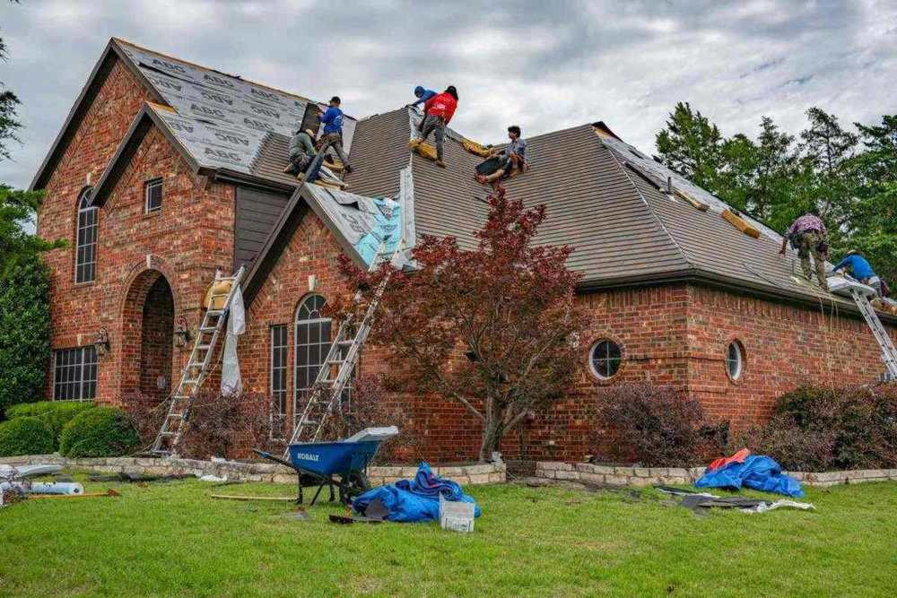

Before a roof replacement, clear three places: the attic, because the tear-off shakes dust and debris onto anything stored there; the driveway and garage, so the roofing crew has room to work; and the yard along the house, where old shingles come down. Whatever you were going to move anyway, we can haul away instead.
Plenty of North Texas roofs get replaced after a hail claim, and the work often lands months after the storm, once the adjuster, the contract and the material order line up. That gap is useful. It is enough time to deal with the stuff that has been in the attic and the garage for years, instead of shoving it into a different corner for the week the roofers are here.
Why the attic matters during a tear-off
A tear-off is loud, physical work. The crew strips the old shingles and underlayment down to the decking, and every hammer blow and scrape shakes the boards above your attic. Dust, grit and roofing granules sift down through gaps in the decking. If damaged boards have to be cut out and replaced, the attic below that spot is briefly open to the sky. Anything stored underneath gets a coat of it.
Roofing contractors commonly ask homeowners to cover or move what is stored in the attic for exactly this reason. Covering works for a few bins. It does not work well for an attic that has quietly filled up with ten years of boxes, which describes a lot of the attics we see.
The practical split looks like this:
- Keep and protect. Holiday bins you use every year, family photos, papers, anything with sentimental value. Bring these down and put them somewhere inside the house until the job is done.
- Let go. The broken box fan, the old luggage, empty appliance boxes, curtain rods from a house you sold, the exercise equipment nobody has touched. This is usually most of the pile, and it is the part we carry down and haul away.
- Leave alone. Anything that is part of the house, and anything you are not sure about.
Our post on what is actually up in a North Texas attic goes through how we bring things down a pull-down ladder safely and why we schedule attic work in the morning when we can.
Do not disturb loose, pebbly insulation. If your attic has loose grey, silver or gold-brown insulation that looks like small pebbles, it may be vermiculite. The EPA's guidance on vermiculite insulation says to treat it as if it contains asbestos and not disturb it. Tell your roofer about it before the tear-off, and tell us before we come out. We will not dig items out of it.
The driveway and the garage
A roofing crew arrives with materials, ladders, tools and something to put the old roof in. Where that goes depends on your contractor, but it usually takes up the driveway for the length of the job. If your cars normally live in the driveway because the garage is full, that is where the squeeze starts.
Clearing enough of the garage to get at least one car inside for the week protects it from falling debris and stray nails, and it keeps the driveway open for the crew. It is also the job most people have been meaning to do for years. Our garage cleanout checklist walks through the sort, and our garage cleanout service covers how we take the rest. In newer neighborhoods to the north, we often do a garage cleanout in Little Elm the same week a roof goes on down the street.
Paint cans, pool chemicals, pesticides and old fuel stay behind. We do not take household hazardous waste. Plano's household chemical collection program is one example of the free drop-offs most cities in our area offer, and the EPA's page on household hazardous waste explains why those products should not go out with regular trash.
The yard along the house
Old shingles and debris come off the roof edge and land in the beds and on the lawn below, even with tarps down. Anything sitting next to the house is in the way and at risk.
Things worth moving or getting rid of before the start date:
- Patio furniture, grills and planters close to the walls. If the patio set was already past its prime, this is a good time to let it go. We regularly pull a weathered patio set off a back porch in Prosper, and our post on old grills and patio furniture at the end of the season covers the rest of that list.
- Brush and limbs stacked along the fence or the side yard, which is often where the roofers want to walk and carry. In lakeside neighborhoods we can clear out the brush pile in a narrow side yard in The Colony so the crew has a path. If the pile fits your city's collection rules and you can wait, our guide to brush piles and city collection covers the free route first.
- Kids' toys, bikes and anything light that could get crushed or carried off.
The tear-off debris itself belongs to the roofer. Getting rid of the old shingles and decking is normally part of a roofing contract, so check yours rather than paying twice for it. The EPA's page on construction and demolition materials explains how that kind of debris is handled. Our part is the household stuff around the job.
Timing it against the roofing schedule
The best window is the week before the roofers start. That gives you time to bring the keepers down from the attic, and it means the garage and side yard are clear before the materials are dropped off. Roofing dates can slide with the weather, so a few days of slack helps. Call before noon and same afternoon is typical across the northern suburbs, so a slipped date rarely leaves you stuck.
If the roof is part of a hail or storm claim, the Texas Department of Insurance keeps a disaster resource page covering how claims work and how to avoid contractor scams. It is worth reading before you sign anything with a roofer who knocked on the door.
How the job runs
Tell us what is in the attic, the garage and the yard, when the roofers start, and whether there is a pull-down ladder or a fixed stairway to the attic. A photo of each space helps. A crew looks at what you have and gives you a firm number before anything is loaded. The quote is the bill, and disposal is included. We are affordable and priced fair, based on how much there is to take.
Our own crew does the carrying, from the attic hatch out the front door, not gig labor hired off an app that morning. Usable furniture and household goods go to local donation partners where they can, and metal and cardboard go to recyclers. If you would rather drop off working pieces yourself, Habitat for Humanity's ReStore donation page explains what many ReStores accept. Our post on where your junk goes after pickup covers the rest. When you have a start date, tell us about the job.
Frequently asked questions
Do I really need to empty the attic before a roof replacement?
Not every inch of it, but anything you care about should come down or be covered, because a tear-off shakes dust and debris onto whatever is stored below the decking. It is also a good time to get rid of what you no longer want rather than moving it twice.
Will you haul away the old shingles?
The tear-off debris is normally the roofer's job and part of the roofing contract. We handle the household items around the job: attic boxes, garage contents, patio furniture and yard debris.
Can you bring things down from the attic for me?
Yes. Our crew works the hatch and the ladder, brings everything down, and sets aside anything you want to keep. If the attic has loose vermiculite insulation, tell us first, because we will not dig items out of it.
How far ahead should I book?
The week before the roofers start is ideal. Call before noon and same afternoon is typical across the northern suburbs, but booking a few days ahead gives you time to pull out the keepers first.
Do you take paint and chemicals from the garage?
No. Paint, pool chemicals, pesticides and fuel go to your city's household chemical collection program. We will point you to it.
With the attic emptied of what you do not need and the garage and side yard clear, the roofers can start on time and nothing you care about ends up under a layer of grit.